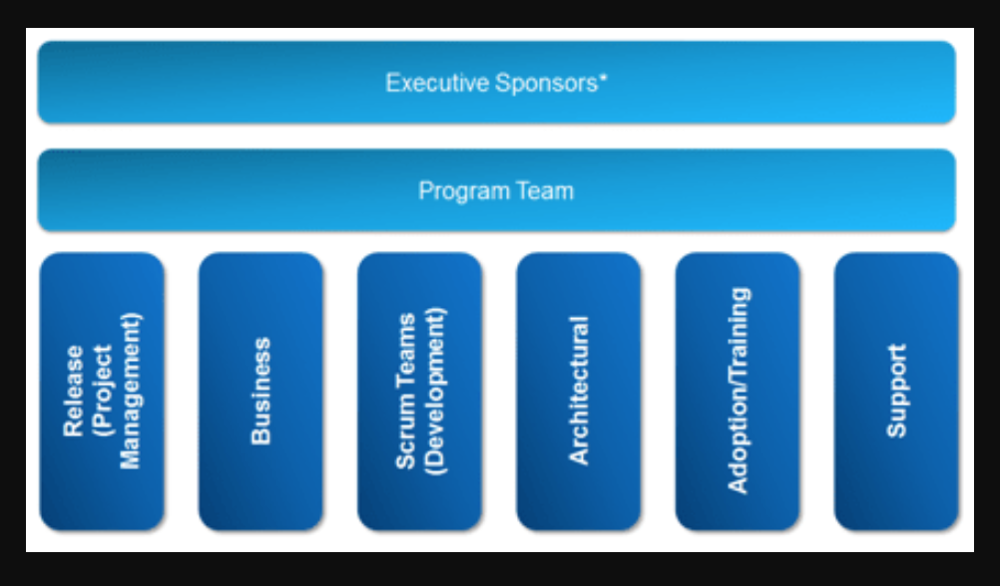

A few stakeholders from different functional groups in the company
work together to ensure that changes support business goals and follow IT best practices and processes
COE promotes collaboration and best practices to ensure great business results
Reviews user feedback and comments from user communities and responds to enhancement requests
Defines and shares best practices, business units find it easier to comply with governance practices in
Data, security, visibility, and access - are critical to meeting regulatory requirements
Develops and communicates the roadmap for change, velocity increases because everyone understands the priority of business requirements
Teams

Program team : manages the CoE’s day-to-day activities
Release (Project Management):
Create and own the overall project roadmap and release plan.
Business:
Convert high-level goals and strategies into a business backlog (Agile) or prioritized list of goals (waterfall).
Scrum Teams:
Take the business backlog and deliver the functionality defined in it.
Architecture:
Define the overall system architecture and make sure that projects adhere to the corporate standards, including data architecture.
Adoption and Training:
Ensure that end users understand how to use the system (training), and report on metrics that reflect adoption.
Support:
Provide support to end users and report system defects.
Architecture team: defines your company’s design standards.
Publish your design standards, and communicate them to all teams that work on Salesforce projects, and the rest of IT.
How to get Started?
Select your CoE team members
Choose a few key issues to tackle: Focus on a few issues that can
demonstrate the value a CoE can provide.
Look for high-priority processes that need work.
For example, do you have trouble with end-user adoption?
Is data quality an issue?
Are your end users clamoring for mobile access?
Does your organization suffer from applications that are no longer needed, but still available?
Create a charter, a backlog, and a release management process.
Ask your Executive Sponsor to announce the CoE and encourage collaboration with it.
Create a Charter
Document your business goals and the strategies to achieve these goals with Salesforce.
Your charter serves as a North Star: everybody understands why the project is being carried out.
A clear charter helps the team to prioritize requirements, to focus on the area that meets their business goals as quickly as possible.
Project stakeholders develop and own the charter. Be sure to include key measures of success.
Create a Backlog or Priority List
You need a prioritized list of projects and tasks (backlog) that, when finished, indicates that the project is complete.
Backlogs help you manage projects when stakeholders ask for increased scope, and they help you know
if you have the resources to complete the project.
The backlog is also a place where you can record acceptance criteria, risks, and other project information.
Create a Release Management Process
Add structure by setting up a release schedule and defining criteria for major versus minor releases.
Releases typically fall into one of the following categories:
Daily:
Bug fixes and simple changes that do not require formal release management, including reports, dashboards, list views, email templates, and user administration.
Minor:
Changes with limited impact, such as a new workflow rule or trigger impacting a single business process. These releases typically require testing, but limited training and change management, and are delivered within a few weeks.
Major:
Changes with significant impact, including configuration and code changes with one or more dependencies. Because these releases greatly affect the user experience and data quality, they require thorough testing, training, and careful change management. Major releases typically occur once a quarter (or like Salesforce, three times a year). Releasing on the same day of the week for minor and major releases is a best practice. This allows for company-wide planning and sets expectations with your business users. In addition, don’t schedule releases near holidays or other major events.
Your release management strategy evolves over time.
Add checks and balances as you discover frequent points of failure or common root causes.
The CoE shares these best practices so that everyone who modifies or extends Salesforce knows how to do so safely.
Use Design Standards for Governance
Following the same design standards, anyone who modifies your organization can ensure that their changes aren’t in conflict with another group’s changes
Employing design standards helps ensure the changes stay within set governor limits
Examples of Design Standards:
Standard naming conventions
Consistently using the Description field
Bulkified code
Standard methods for deprecating classes and fields
Video :Manage Development in Your Org with Salesforce Governance Framework
Video : CoE in a Box: A Toolkit to Optimize your Salesforce Implementation
Video : Single vs Multi-Org Strategy: The Key Questions You Need to Address
Key Centers
Best Practice Centers
These are the sharers, focusing on creating environments
where business units can collaborate with each other on like-minded processes and technologies,
designed to more rapidly enable lines of business.
DevOps Centers
These are the doers, focusing on providing a shared service to scope, design, develop,
and deliver across with optimal IT governance, designed to foster standardization and reuse
Competency Centers
These are the guiders, focusing on establishing best practices and standards to enable, build competency,
and embed expertise within individual lines of business through the creation of targeted improvement agendas.
Innovation Centers
These are the creators, focusing on the incubation and experimentation
required to develop the capabilities with emerging technologies,
designed to accelerate maturity and time to value.
Manage Change with a Governance Framework
Governance improves agility by ensuring all members of your team are working together to achieve goals that are aligned with overall business goals.